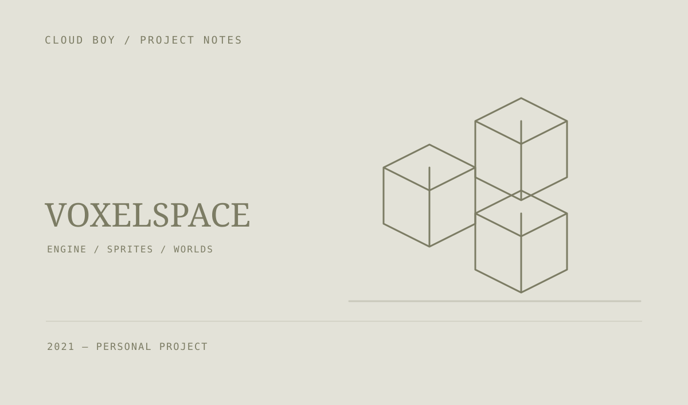

VoxelSpace
从窗口、输入和渲染循环开始，搭建自己的游戏引擎骨架。已保存的早期实现主要围绕 2D 精灵、动画、组件和游戏世界展开。

从底层循环理解游戏
项目把初始化、输入处理、逐帧更新和绘制拆成引擎的基础循环，并通过窗口、Shader、纹理和顶点数组组织渲染。
组件与游戏世界
代码包含 Actor、组件、移动、输入、精灵和动画精灵等结构，以及独立的游戏世界与关卡实验。项目希望从这些小模块逐步理解引擎如何支撑一段可玩的内容。
保留早期尝试的真实样子
仓库名称提出了体素引擎与编辑器的方向，但已记录的阶段成果主要是基础 2D 渲染和引擎框架。这里按学习原型展示，不将其描述为已经完成的体素编辑器。